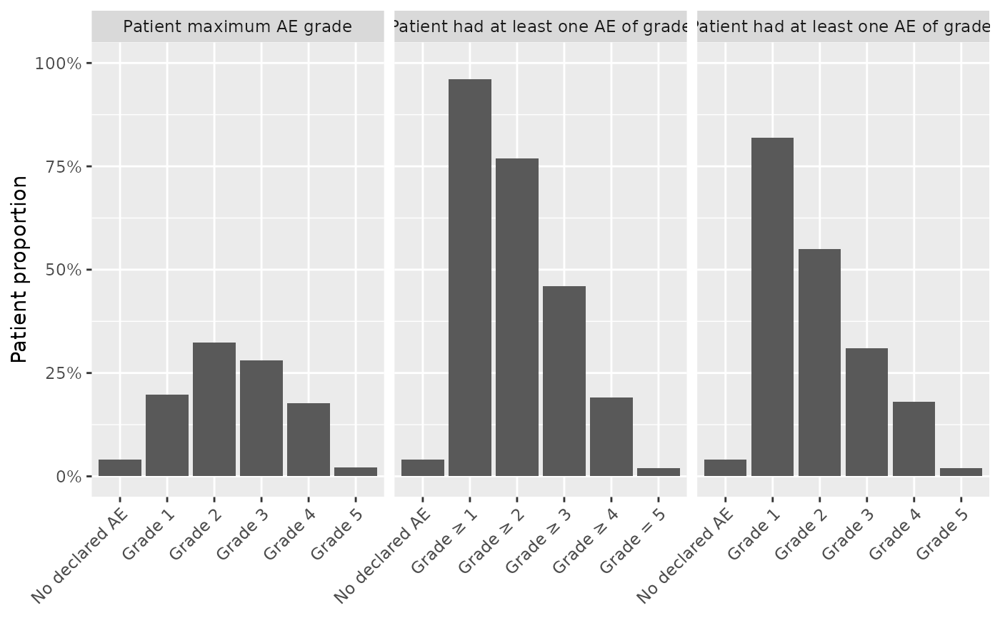
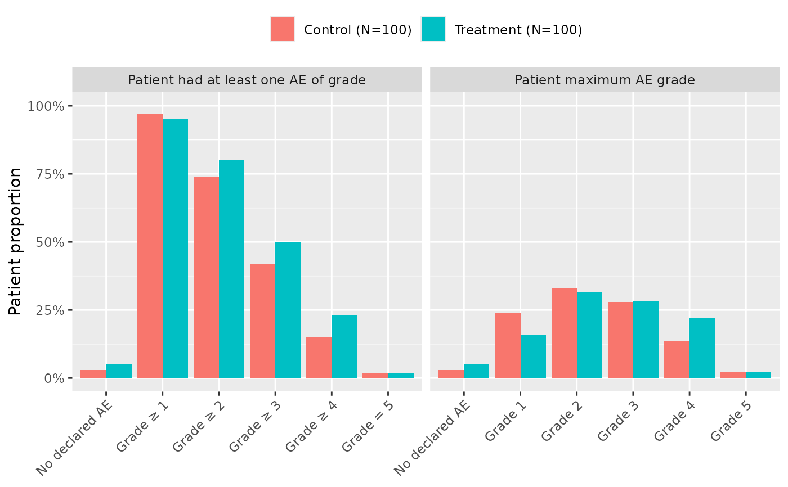
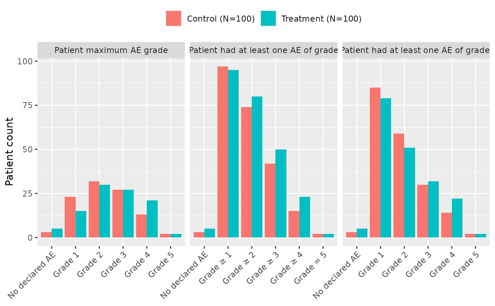
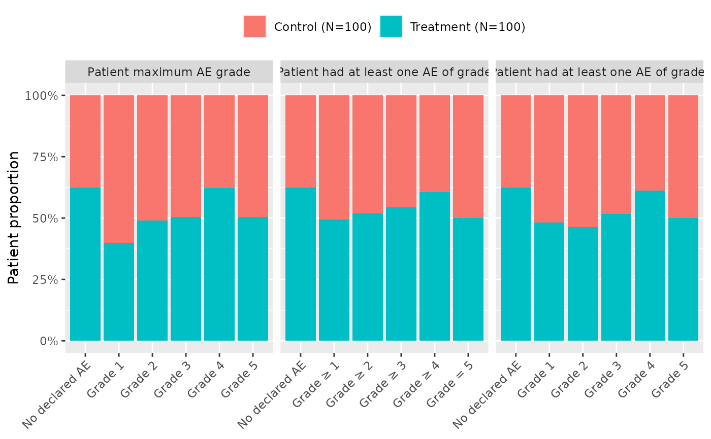
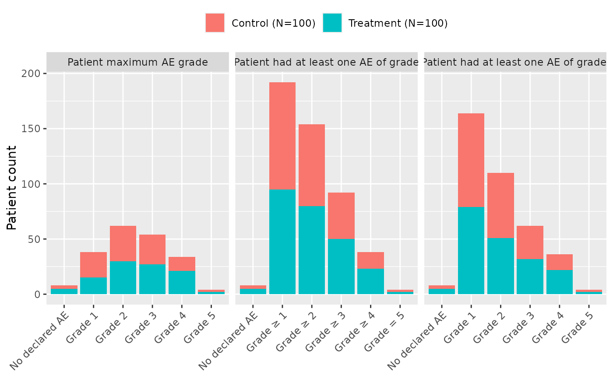

Produce a graphic representation of AE, counting AE as bars for each patient, colored by grade. Can be faceted by treatment arm.
Arguments
- df_ae
adverse event dataset, one row per AE, containing subjid, soc, and grade.
- ...
unused
- df_enrol
enrollment dataset, one row per patient, containing subjid (and arm if needed). All patients should be in this dataset.
- variant
one or several of
c("max", "sup", "eq").maxcomputes the maximum AE grade per patient,supcomputes the number of patients having experienced at least one AE of grade higher or equal to X, andeqcomputes the number of patients having experienced at least one AE of grade equal to X.- position
Position adjustment (cf.
ggplot2::geom_col())- type
whether to present patients as proportions (
relative) or as counts (absolute)- arm
name of the treatment column in
df_enrol. Case-insensitive. Can be set toNULL.- grade
name of the AE grade column in
df_ae. Case-insensitive.- subjid
name of the patient ID in both
df_aeanddf_enrol. Case-insensitive.- total
whether to add a
totalcolumn for each arm.
Examples
tm = grstat_example()
attach(tm, warn.conflicts=FALSE)
ae_plot_grade(df_ae=ae, df_enrol=enrolres)

ae_plot_grade(df_ae=ae, df_enrol=enrolres, arm="ARM", variant=c("sup", "max"))

ae_plot_grade(df_ae=ae, df_enrol=enrolres, arm="ARM", type="absolute")

ae_plot_grade(df_ae=ae, df_enrol=enrolres, arm="ARM", position="fill")

ae_plot_grade(df_ae=ae, df_enrol=enrolres, arm="ARM", position="stack", type="absolute")
